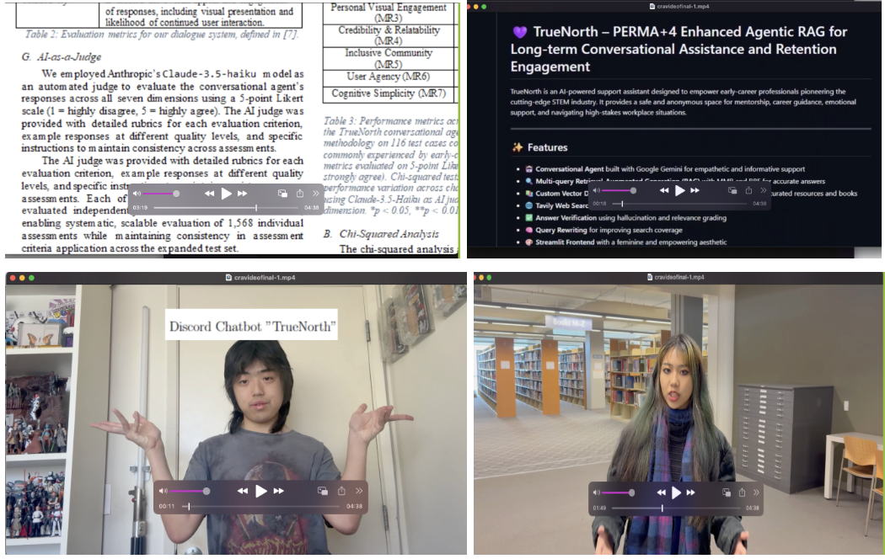

Week 10 (8/04 - 8/08)
- Check in with my mentor to send 10-week research proposal for REU funding
Week 9 (7/28 - 8/01)
- Worked on research paper
- Worked on summer classes to focus on finals
Week 8 (7/21 - 7/25)
- Worked on summer classes
- Worked on research proposal
- Helped Anthony with GitHub stuff
Week 7 (7/14 - 7/18)
- Worked on summer classes
- Worked on research proposal
Week 6 (7/07 - 7/11)
- Emailed Yan Li link to research paper (Laguna 6-page paper)
- Continued research
I watched the CRA UR2PhD Spring workshop series webinar, workshop #4, “How Computing Can Fit My Other Interests” uploaded on Monday, May 7, 2024. I liked how seamlessly the speakers wove computing into fields as diverse as indoor robotic agriculture, retro gaming hardware, AI-driven art, paleontology, and behavioral economics, and by the energy they brought as technical founders. Their stories showed me that no matter how niche my passion may seem, whether it’s positive-psychology frameworks or community-driven mental-health interventions, there’s a place for it in computing research. As a result, I’m committing this summer to explore new interdisciplinary collaborations (for instance, with psychology and education colleagues), to prototype generative-AI and RAG features in my Discord chatbot project, and to integrate data-driven personalization methods that tailor mental-health strategies for underrepresented CS students.
Week 5 (6/30 - 7/04)
Goals:
- Contributed to GitHub
- Applied William server tutorial
- Worked on proposal video 
Reflection:
I think the perception of myself that my teammates have of me align with the work I have contributed. Our team has been very consistent, so I would say our team has only improved since the mid-course research reflection, from the growing skills me and teammate Anthony have gained in this class.
Week 4 (6/23 - 6/27)
Goals:
- Read again on RAG proposal (practice understanding proposal structure)
- Add and edit LinkedIn and paste link in CRA Discord for others to follow (currently at 24 connections)
- SSH thing from William using William’s Debian computer (Linux, SSH connection)
- Work on draft on Overleaf (Evaluation and Implementation Plan) for research proposal
Daily Logs:
- Tuesday 6/10 – Turn in Proposal Draft, Add more people and edits on LinkedIn, Join more groups, Ask questions for guest speakers
- Wednesday 6/11 – Work on research proposal and get familiar with Overleaf
Week 3 (6/17 - 6/18)
Goals:
- Work on proposal draft 2: research problem statement, context, and proposed solution
- Re-edit GitHub README file for documentation
- 10 min check-in with instructors over Zoom at 12:10 PM
Daily Logs:
- Tuesday 6/10 – Rereading scientific articles, Making a LinkedIn page
- Wednesday 6/11 – Work on research proposal and get familiar with Overleaf
Week 2 (6/10 - 6/13)
Goals:
- Set up research log
- Make LinkedIn page
- Learn how to read research articles (rereading Bridging learning gaps through Discord: peer-to-peer learning in computer graphics education)
- Speak with instructors about project
- Meet mentor on Zoom (Mon Jun 16, 3 PM)
- Learned how to use Overleaf for Research Proposal preliminary work and LaTeX
Daily Logs:
- Tuesday 6/10 – Rereading scientific articles, Making a LinkedIn page
- Wednesday 6/11 – Work on research proposal and get familiar with Overleaf
- Thursday 6/12 – Read Human Computer Interaction abstracts
Week 1 (6/03 - 6/05)
Goals:
- Getting familiar with the coursework, expectations
Daily Logs:
- Wednesday 6/3 – Learning how to read scientific articles; Reflecting and researching my identity
- Thursday 6/4 – Do mentor-mentee contract; Do syllabus quiz
- Friday 6/5 – Set up research log; Read two papers related to my research project.
Interactive Learning in Computer Science Education Supported by a Discord Chatbot (2024) by Santiago Berrezueta Guzman, Stephan Krusche, Ivan Parmacli, Stefan Wagner.
Problem: Enhancing feedback collection through a Discord bot to improve academic feedback, especially for first-semester science students.
Main Contribution: Creating a Discord bot that engages students in academic activities to make sure the course material is academically engaging.
Reflection Questions:
Q: What are you most excited about in UR2PhD, and why?
A: I am most excited about working with my team members and doing research and understanding the research process.
Q: What are you most nervous about in UR2PhD, and why?
A: I am most nervous about understanding certain terms and being familiar with the research progress.
Q: What did you think about the two sample research logs? What were their strengths? What (if any) aspects will you borrow?
A: They had bullet points, chronological order, and well-summarized goals.